01 · 3D Mo₂S₃
The bulk Mo₂S₃ lattice
Mo(1) and Mo(2) form two inequivalent chain families in a three-dimensional crystal.
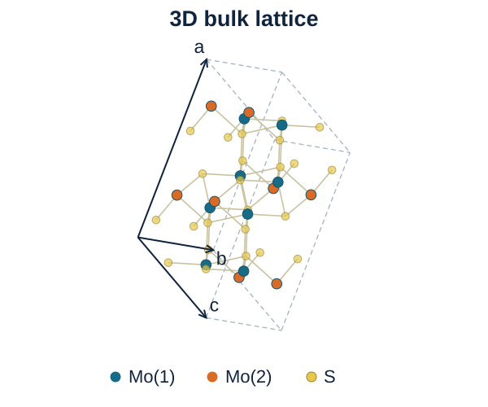
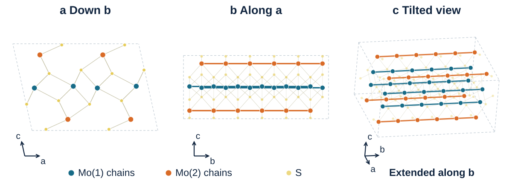
The Mo chains run along b; transport is compared along a, b and c.
Mo(1) and Mo(2) form two inequivalent chain families in a three-dimensional crystal.


The Mo chains run along b; transport is compared along a, b and c.
Band crossings and finite Fermi-level DOS establish a metallic parent.
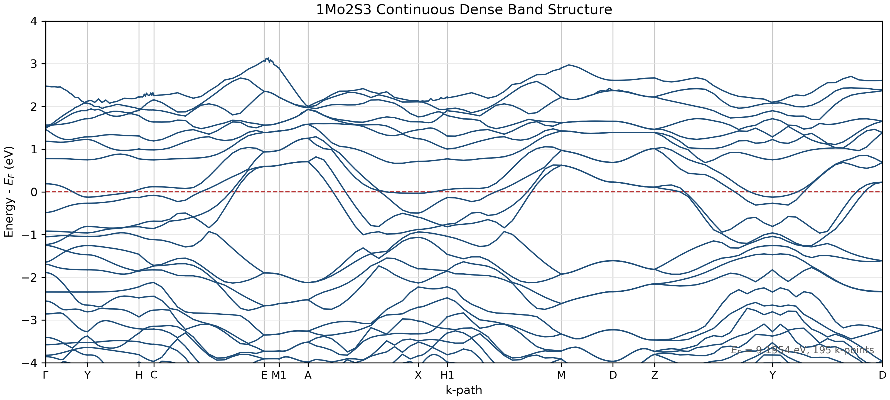
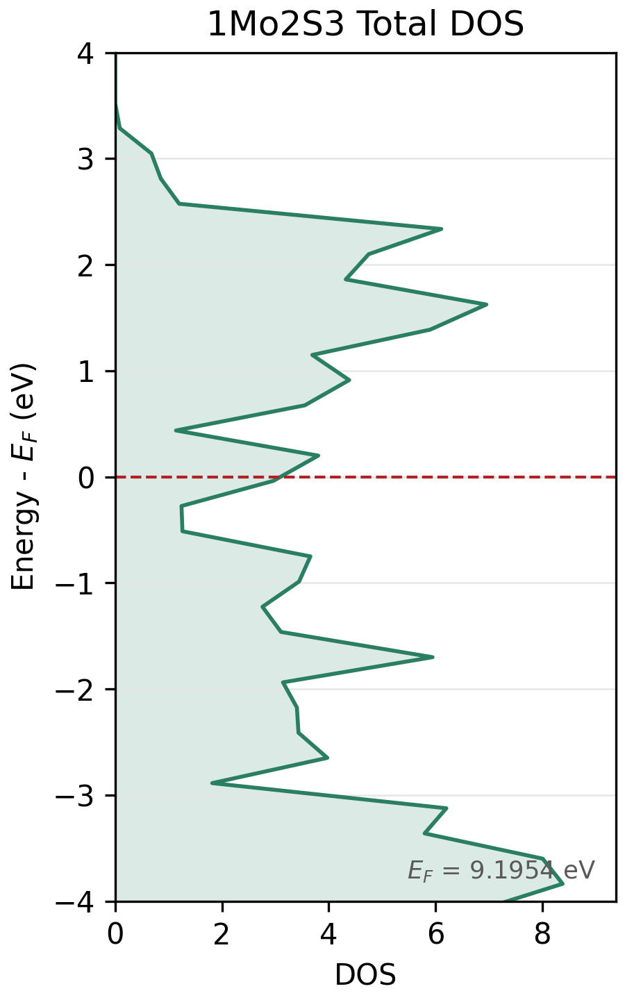
The starting structure has available states at E_F.
q₁ and q₂ identify two soft modulation wavevectors.
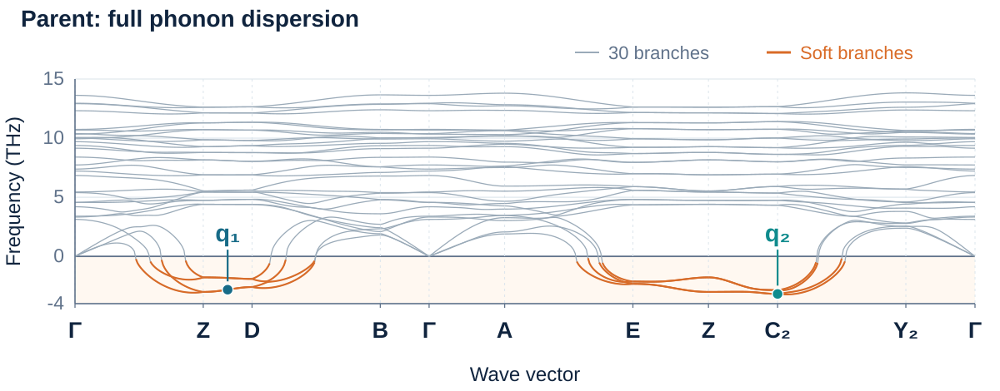
q₁ lies between Z and D; q₂ is equivalent to C₂.
The energy falls with distortion; q₂ stays lower at denser k meshes.
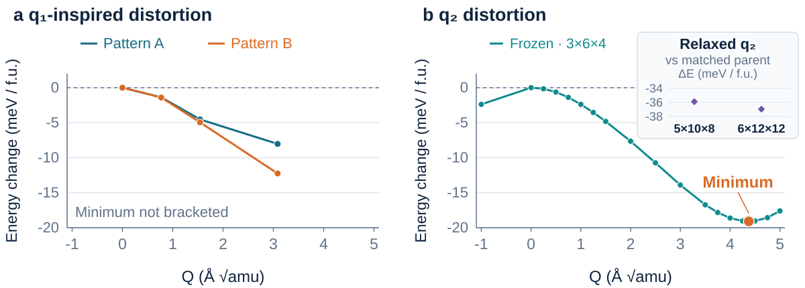
q₂ has a finite-Q minimum and retains its energy preference.
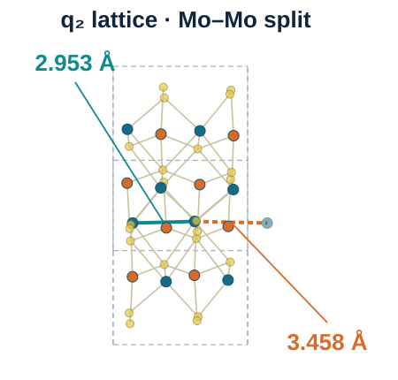
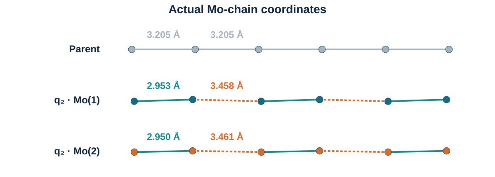
Both Mo families: 3.205 Å → about 2.95 Å and 3.46 Å.
The two crystallographic Mo families have different displacement amplitudes.
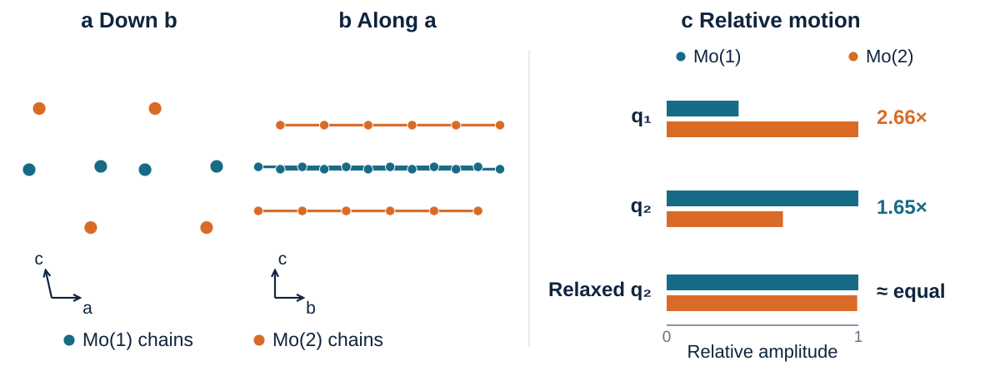
q₁ moves Mo(2) more; q₂ initially moves Mo(1) more. Relaxed q₂ involves both.
Moving one Mo atom along x produces a force back toward its reference position.
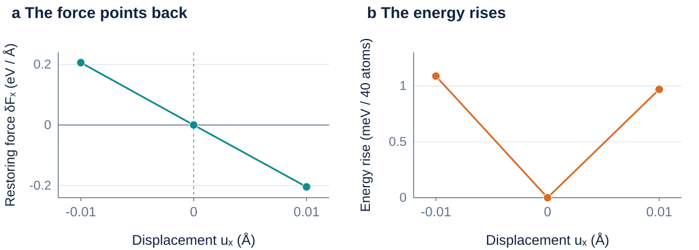
The tested coordinate has positive curvature: Kₓ ≈ 20.52 eV Å⁻².
Both structures have Fermi-level states, with different orbital weights.
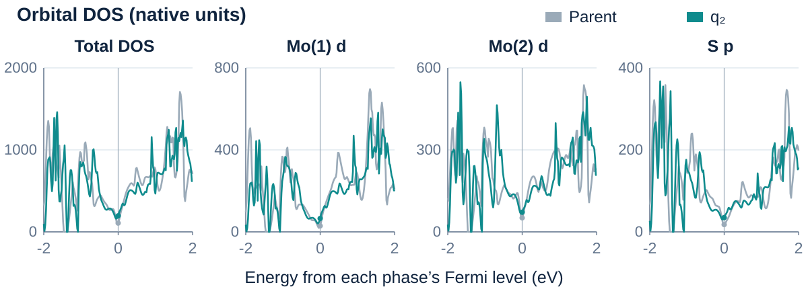
The distortion redistributes Mo d and S p spectral weight.
More DOS, fewer propagating channels.
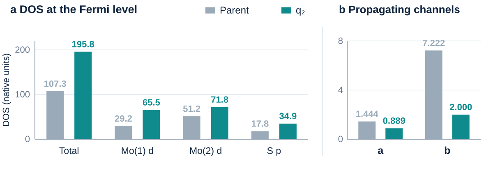
The reduction is strongest and most uniform along b.
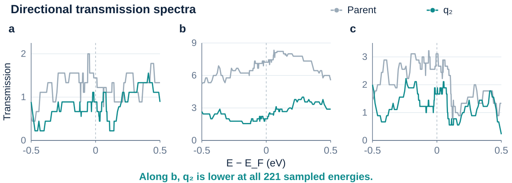
b-directed transmission is lower at every sampled energy.
The q₂ distortion suppresses all three directions at 300 K.
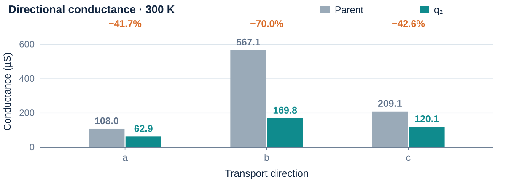
b-directed conductance falls by about 70%.
At 300 K, the c-directed response changes from positive to negative.
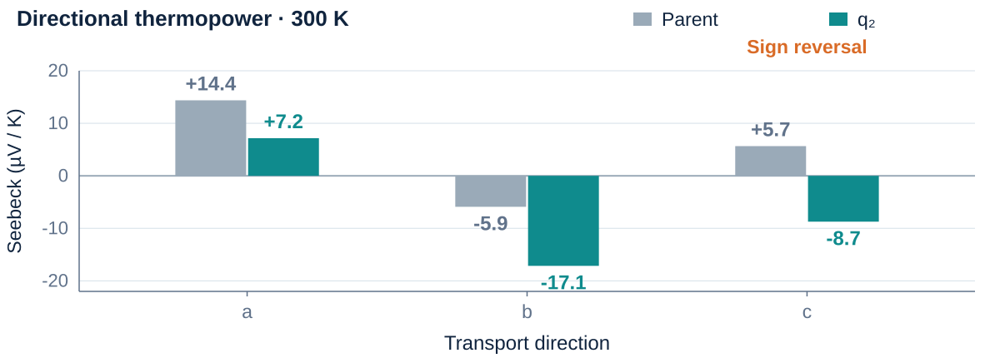
Parent (+, −, +) → q₂ (+, −, −) along a / b / c.
Thermal broadening changes the weighting of the same electronic structures.
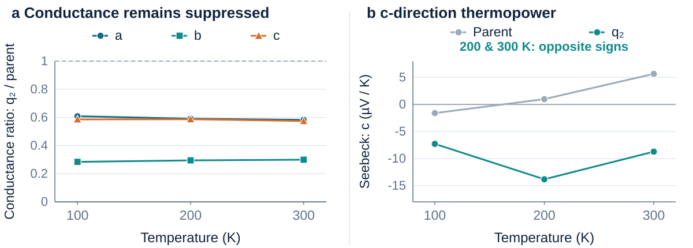
q₂ keeps negative c-directed thermopower across all three temperatures.
q₂ moves the c-directed transport-weighted energy across E_F.
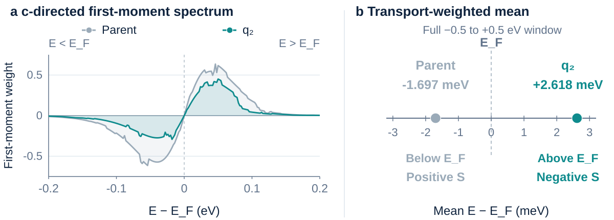
A small change in transport energy weighting reverses the Seebeck sign.
Shortened links gain bond overlap; lengthened links lose it.
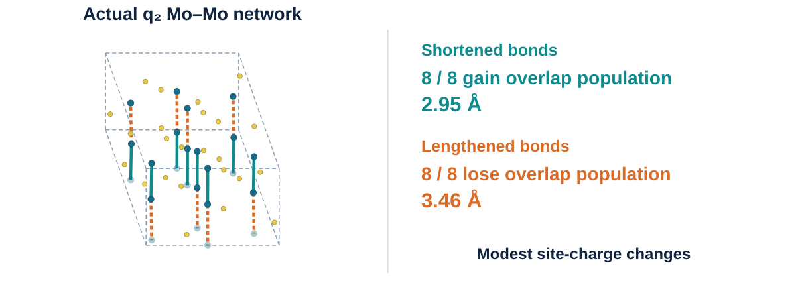
Bond-centred redistribution is the clearest electronic signature.
Bands cross the Fermi level.
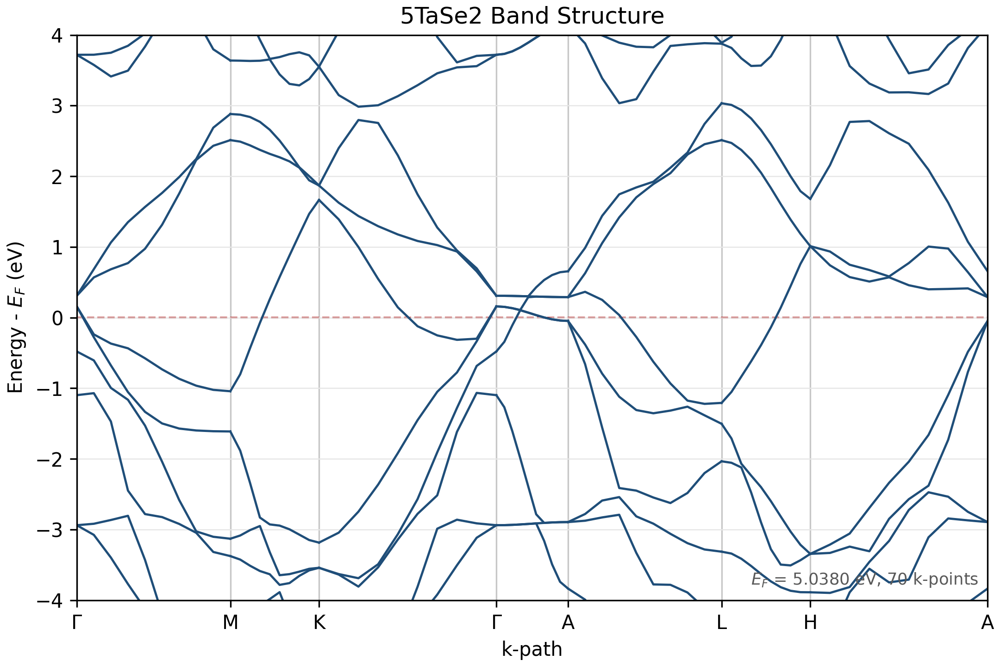
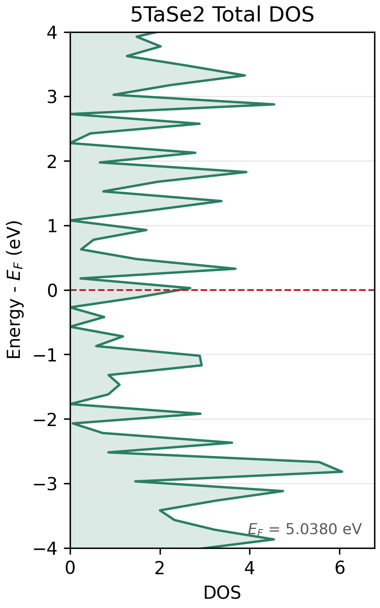
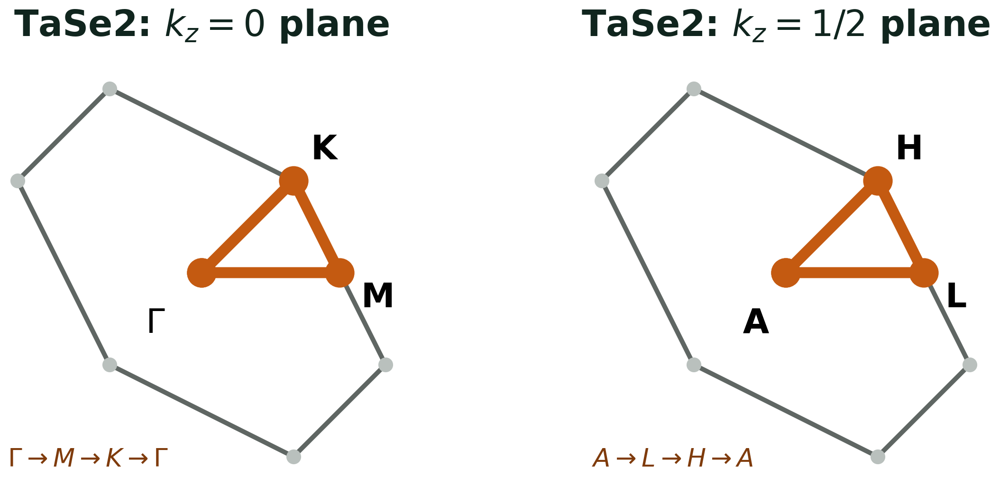
TaSe₂ provides the earlier layered-metal reference.
Soft modes identify a CDW candidate.
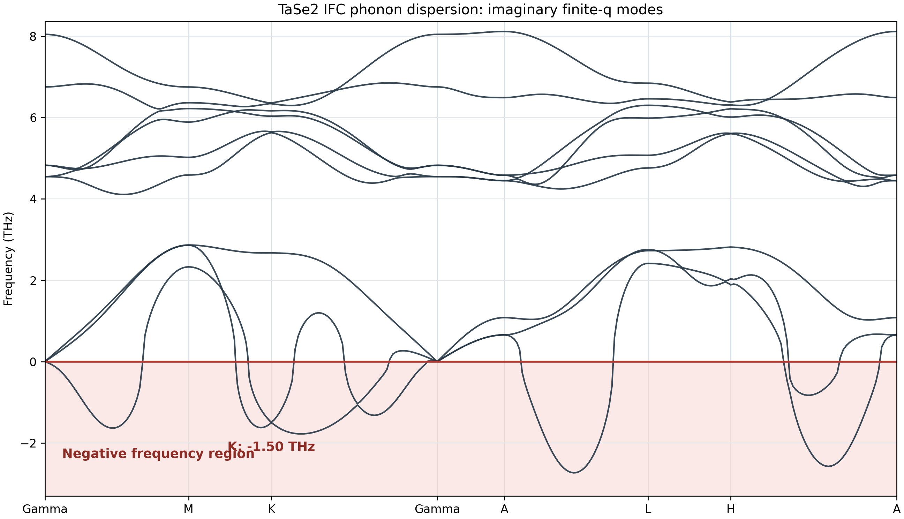
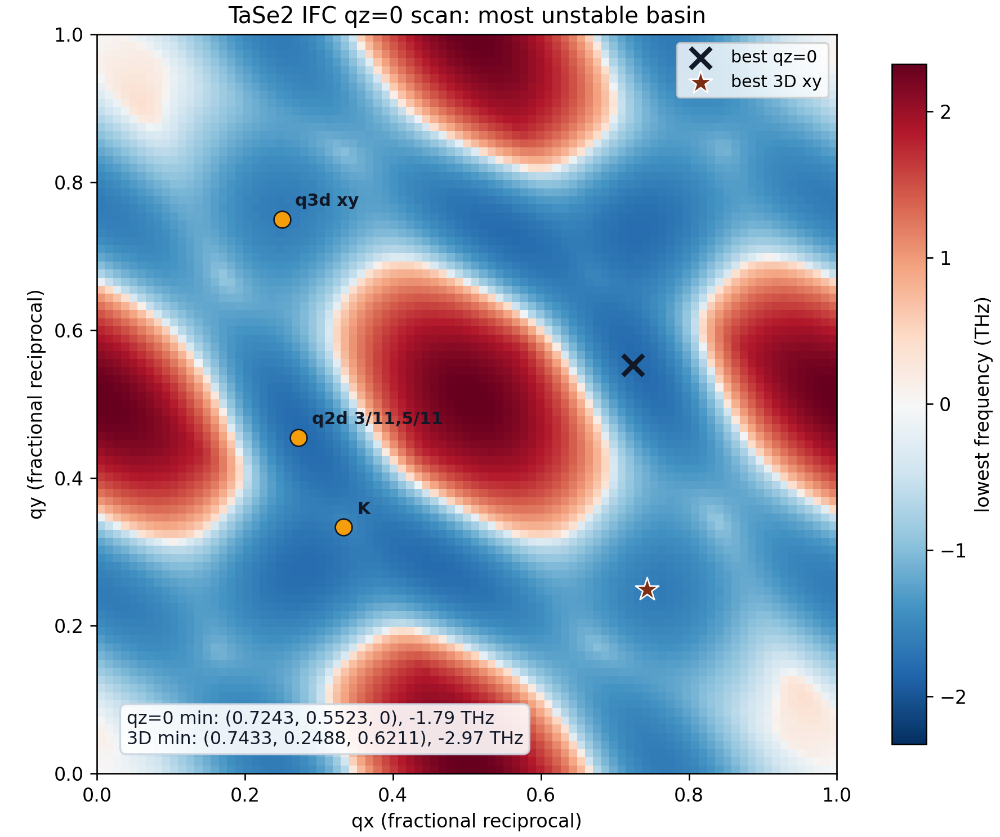
The parent structure has a finite-wavevector instability.
Several finite-q distortions soften the parent lattice.
| Wavevector q | Soft mode (THz) |
|---|---|
| K (1/3, 1/3, 0) | -1.501 |
| q3d (1/4, 3/4, 3/8) | -2.964 |
| q2d (3/11, 5/11, 0) | -1.792 |
| q2d (2/7, 3/7, 0) | -1.786 |
| q2d (1/4, 1/2, 0) | -1.742 |
The K modulation was selected for the earlier relaxation.
The relaxed K distortion lowers the parent energy.
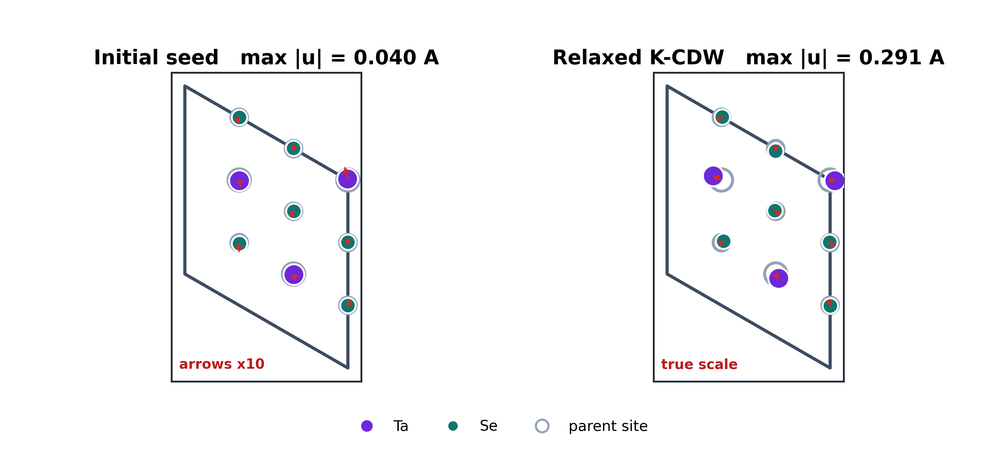
The distorted structure is lower in energy.